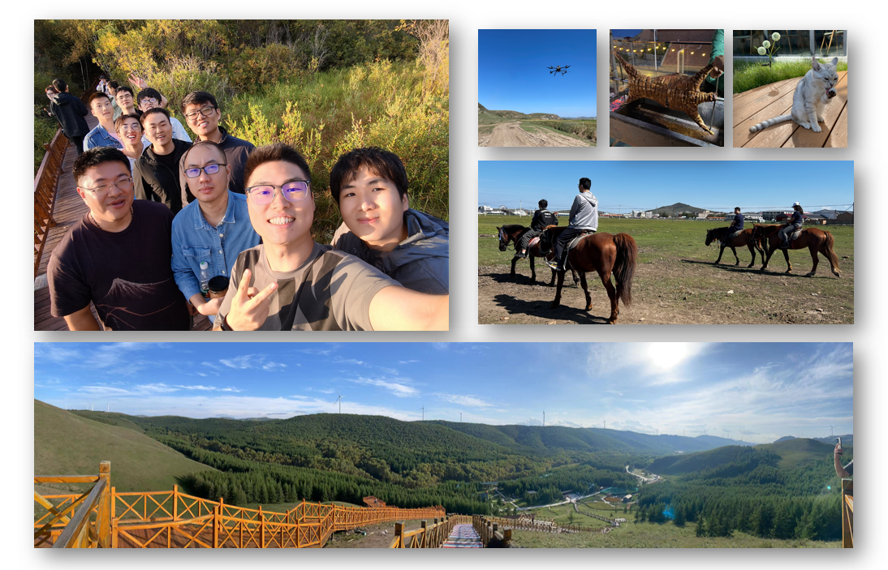
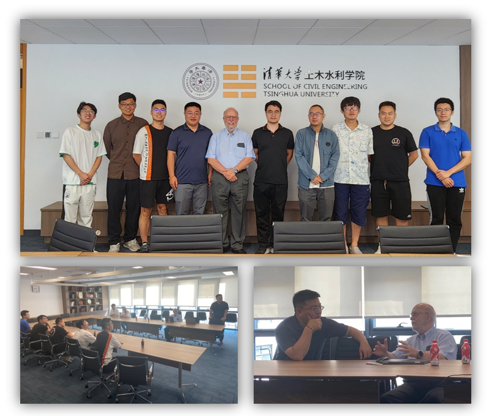

News
2023.9.9. 张熠课题组到河北承德丰宁坝上草原出游，度过了两天非常开心的时光。

2023.8.25. 葡萄牙工程院院士、葡萄牙里斯本大学杰出教授、海洋科技与海洋工程中心（CENTEC）主任Carlos Guedes Soares教授访问土木工程系，并作了题为
Strategies for Maintenance Planning of Floating Offshore Wind Turbines的学术讲座。

2023.6.20. 德国莱布尼兹汉诺威大学Micheal Beer教授访问土木工程系，并作学术讲座。
2023.6.10. 清华大学土木工程系张熠课题组网站正式开通
Yi Zhang's Lab
Welcome to our lab!